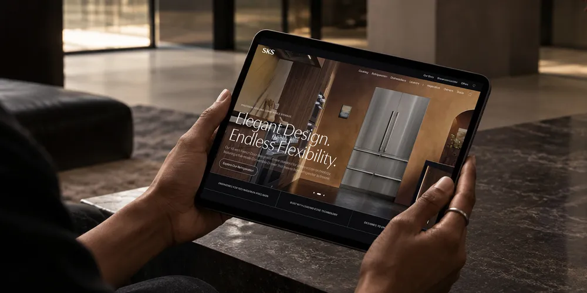
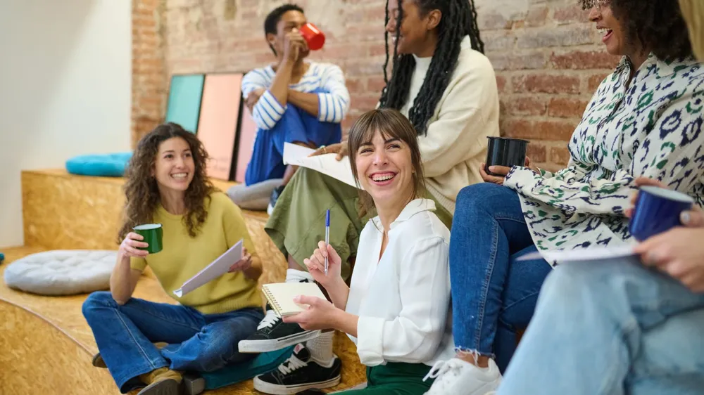
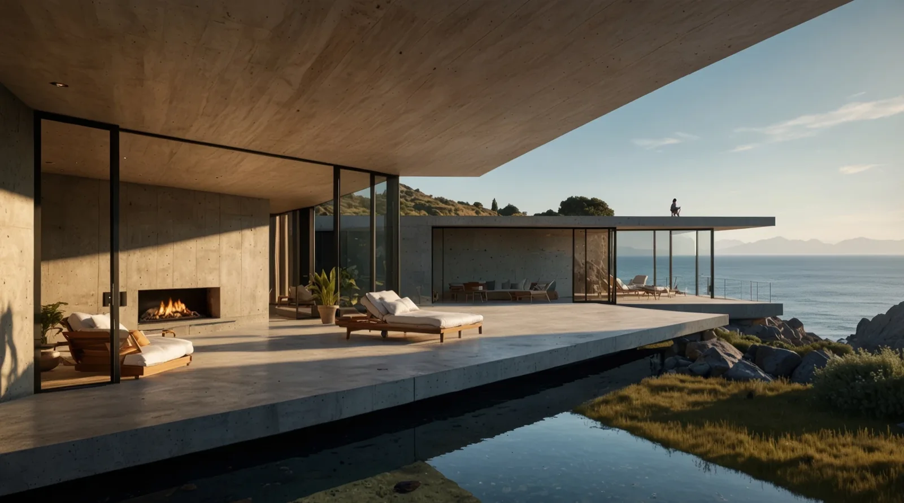
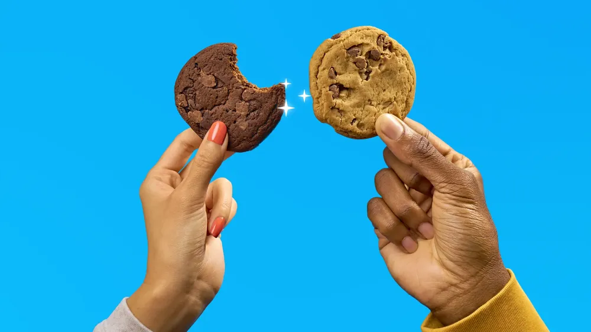
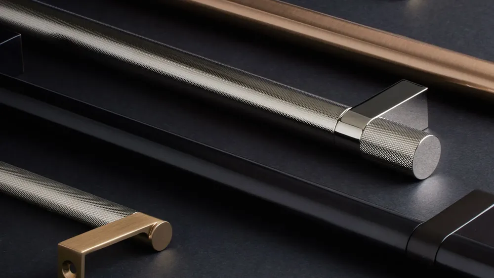
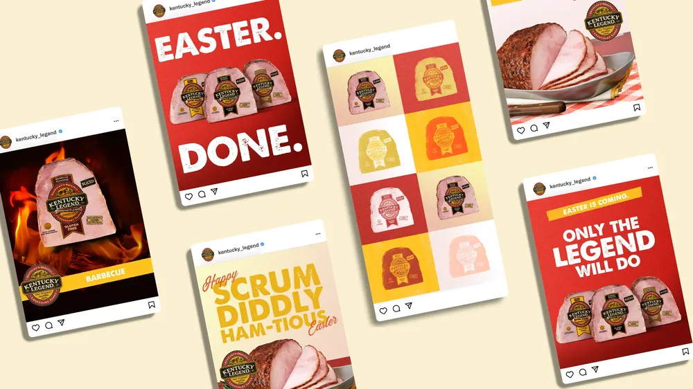
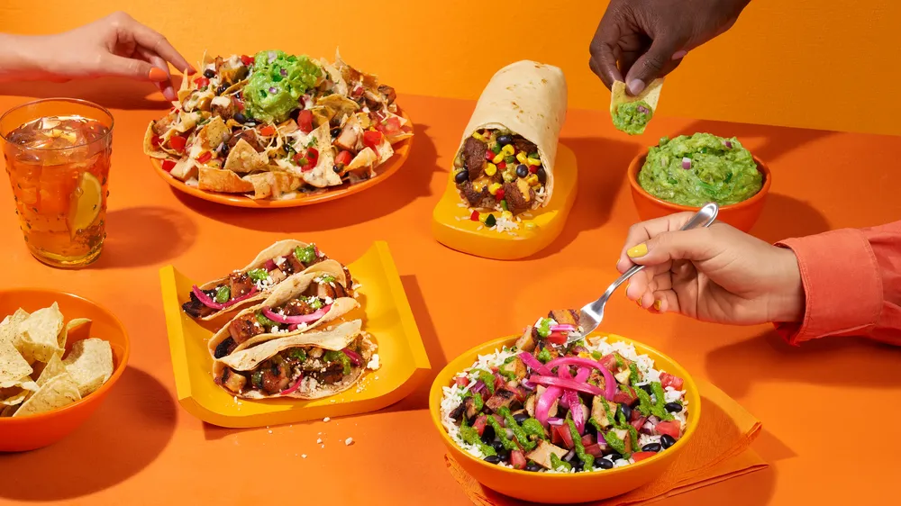
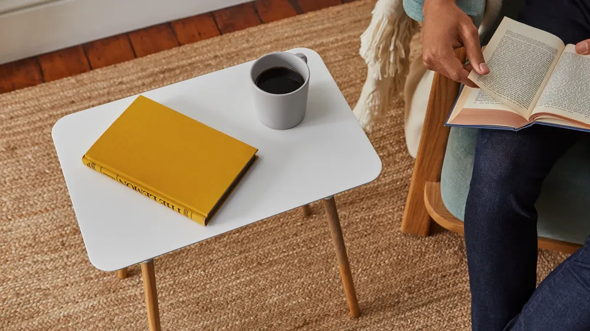

Our Work
Our work in practice
These selected case studies span industries, bringing together solutions, lasting partnerships, and decades of experience.
-

SKS
Bringing a new expression of Technicurean Living home
-
Tula (P&G Specialty Beauty)
Bringing prebiotics to a new generation of wellness seekers
-

Lean In
Expanding the reach of a global movement for women
-

Douglas Elliman
Launching a new world of luxury real estate
-
Tempur-Sealy International
Taking sleep marketing to new heights
-

Frito-Lay
Building a DTC future where snackers come first
-

Emtek
Making high-end hardware make sense
-
Tempur-Sealy International
Disrupting the disruptors
-
Ka'Chava
Boosting subscription with high-quality performance creative
-
Supernal
Opening the world to greater possibilities
-

Kentucky Legend
Serving up a new legendary standard
-

Qdoba Mexican Eats
Bringing more flavor to the marketplace
-

Yamazaki Home
Introducing happy homemaking to the US market
-
DevaCurl
Ushering in a new era of community for all curlkind